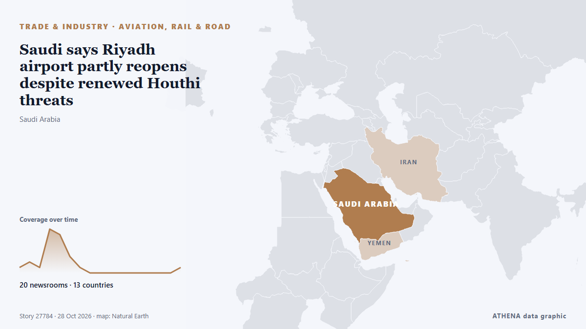

Saudi says Riyadh airport partly reopens despite renewed Houthi threats

Saudi Arabia said its main airport had partially resumed operations at two terminals on Sunday despite renewed threats to target it from Yemen’s Iran-aligned Houthis, as the kingdom intercepted… από Cyprus Mail
Αναφέρθηκε ανεξάρτητα από 20 μέσα σε 13 χώρες από τις 24 Οκτ, πρώτο το The Kathmandu Post· η κάλυψη εξασθενεί. Το ATHENA εκτιμά τον κίνδυνο μέτριο (3.8/10), κυρίως λόγω της σοβαρότητάς του και της εμβέλειάς του. Βεβαιότητα 86% (υψηλή): το επιβεβαιώνουν 20 ανεξάρτητα μέσα, μέση αξιοπιστία 77%. Μέσα ανά χώρα: Ηνωμένες Πολιτείες (4), Ηνωμένα Αραβικά Εμιράτα (4), Ομάν (3). Κάλυψη: 24 Οκτ έως 28 Οκτ, 97 ώρες.
Γιατί έχει σημασία: Η Ερυθρά Θάλασσα και τα στενά Μπαμπ ελ-Μαντέμπ είναι η συντομότερη θαλάσσια οδός Ασίας–Ευρώπης, μέσω της Διώρυγας του Σουέζ. Οι επιθέσεις σε εμπορικά πλοία αναγκάζουν τις εταιρείες να παρακάμπτουν την Αφρική, με κόστος χρόνου και χρημάτων για το παγκόσμιο εμπόριο και τη ναυτιλία.
Τι άλλαξε: 1 νέα αναφορά στο 24ωρο έως 28 Οκτ.
Οι τίτλοι των ειδήσεων παρουσιάζονται στα αγγλικά, όπως δημοσιεύτηκαν.
Με μια ματιά
Επιλέγεται, βαθμολογείται και γράφεται από τη δημοσιευμένη μεθοδολογία του ATHENA. Κανένας συντάκτης δεν παρεμβαίνει σε μεμονωμένα γεγονότα. Πώς παράγεται ›
| 24 Oct 15:28 UTC | 1 |
|---|---|
| 24 Oct 21:28 UTC | 2 |
| 25 Oct 03:28 UTC | 1 |
| 25 Oct 09:28 UTC | 8 |
| 25 Oct 15:28 UTC | 7 |
| 25 Oct 21:28 UTC | 3 |
| 26 Oct 03:28 UTC | 1 |
| 26 Oct 09:28 UTC | 0 |
| 26 Oct 15:28 UTC | 0 |
| 26 Oct 21:28 UTC | 0 |
| 27 Oct 03:28 UTC | 0 |
| 27 Oct 09:28 UTC | 0 |
| 27 Oct 15:28 UTC | 0 |
| 27 Oct 21:28 UTC | 0 |
| 28 Oct 03:28 UTC | 0 |
| 28 Oct 09:28 UTC | 0 |
| 28 Oct 15:28 UTC | 1 |
| 24 Oct 15:28 UTC | 1.1 |
|---|---|
| 25 Oct 12:24 UTC | 1.5 |
| 25 Oct 14:54 UTC | 2.5 |
| 25 Oct 18:49 UTC | 4.4 |
| 28 Oct 16:38 UTC | 3.8 |
Γιατί αυτοί οι αριθμοί
Σημασία
Κίνδυνος
Βεβαιότητα
Η κάλυψη — ποιος το ανέφερε και πότε
ο τίτλος όπως δημοσιεύτηκε · ανοίγει το πρωτότυπο- The Kathmandu Post · ΝεπάλHouthi attacks raise safety fears among Nepali workers in Saudi Arabia
- Al-Monitor · Ηνωμένες ΠολιτείεςSaudis say Riyadh airport partly reopens despite renewed Houthi threats
- The National · Ηνωμένα Αραβικά ΕμιράταMiddle East latest: US tells staff not to use Saudi airports without 'special authorisation'
- ABC News (International) · Ηνωμένες ΠολιτείεςSaudi Arabia reopens airport as attacks by Houthi rebels persist, and other Mideast news
- The New York Times (World) · Ηνωμένες ΠολιτείεςSaudi Arabia Reopens Riyadh Airport Even as Houthis Threaten Further Strikes
- Dawn · ΠακιστάνHouthis target Saudi Arabia's south as Riyadh airport due to reopen
- Oman Observer · ΟμάνSaudi says Riyadh airport reopens despite threats
- The New Arab · INTHouthis fire missiles at Saudi Arabia as Riyadh airport reopens
- CNBC World · Ηνωμένες ΠολιτείεςSaudi Arabia says it intercepted missiles and drones from Iran-backed Houthis
- Cyprus Mail · ΚύπροςSaudi says Riyadh airport partly reopens despite renewed Houthi threats
- Al Jazeera English · ΚατάρSaudi air defences intercept Houthi barrage near Mecca
- The Straits Times · ΣιγκαπούρηSaudi says Riyadh airport partly reopens despite renewed Houthi threats
- Oman Observer · ΟμάνSaudis say Riyadh airport partly reopens
- Gulf News · Ηνωμένα Αραβικά ΕμιράταUAE residents’ update: Trump rules out Iran strike; injuries reported in Houthi attack on Saudi Arabia
- RTÉ News · ΙρλανδίαHouthis say they attacked Riyadh airport after reopening
- The Independent · Ηνωμένο ΒασίλειοSaudi Arabia reopens Riyadh airport after Houthi attacks but flights remain limited
- Daily Maverick · Νότια ΑφρικήSaudis say Riyadh airport partly reopens despite renewed Houthi threats
- Anadolu Agency (English) · ΤουρκίαUS warns of escalating security threats in Saudi Arabia as Riyadh airport partly reopens
- Rappler · ΦιλιππίνεςSaudis say Riyadh airport partly reopens despite renewed Houthi threats
- Gulf News · Ηνωμένα Αραβικά ΕμιράταHow Yemen’s Houthis became a threat to Saudi Arabia — and what they really want
- Oman Observer · ΟμάνSaudi oil pumping stations, Riyadh airport attacked: Ansar Allah
- The National · Ηνωμένα Αραβικά ΕμιράταMiddle East latest: Egypt's parliament approves military support for Saudi Arabia
- APP (Associated Press of Pakistan) · ΠακιστάνChina voices concern over regional tensions following reported Houthi attacks in Saudi Arabia